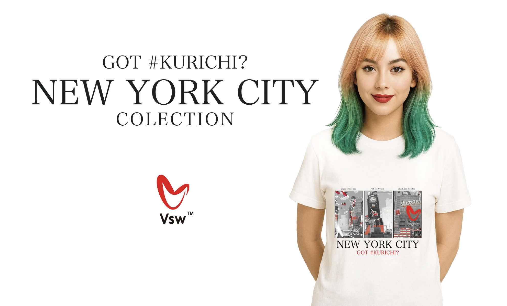
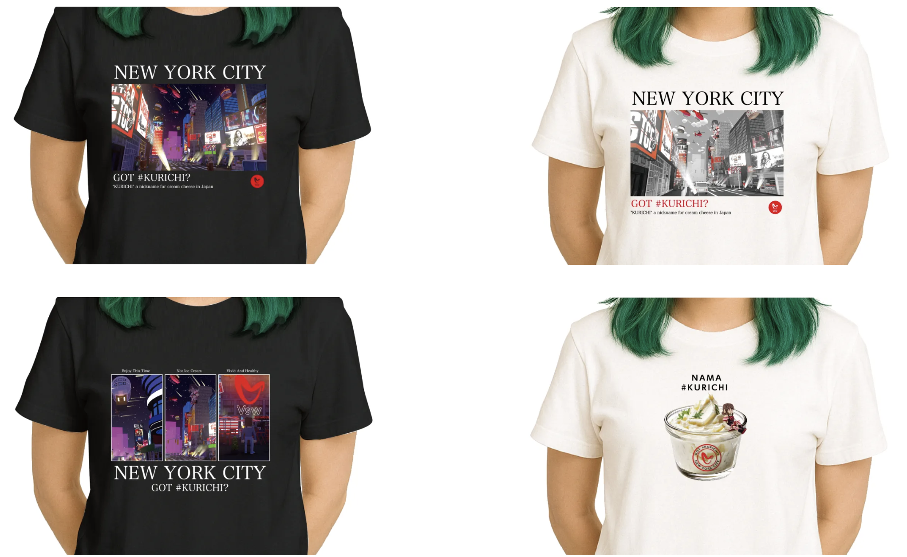

#KURICHI（クリームチーズバーガー）が飛び出した、メタバースのニューヨークシティ。
その風景を切り取った全6種の限定Tシャツがついに登場！
THE SANDBOX内の #KURICHI LAND で見られる近未来NYのシーンを、ストリート感あふれるアートTにプリント。リアルでも「GOT #KURICHI?」を叫びたくなる1枚です。
LINEUP

👕 仕様詳細
- ボディ：United Athle 5.6oz ハイクオリティTシャツ
- 着心地と耐久性を両立した定番モデル
- カラー：ホワイト／ブラック 2色展開
- サイズ：M・L・XL（ユニセックス対応）
- デザイン：全6種